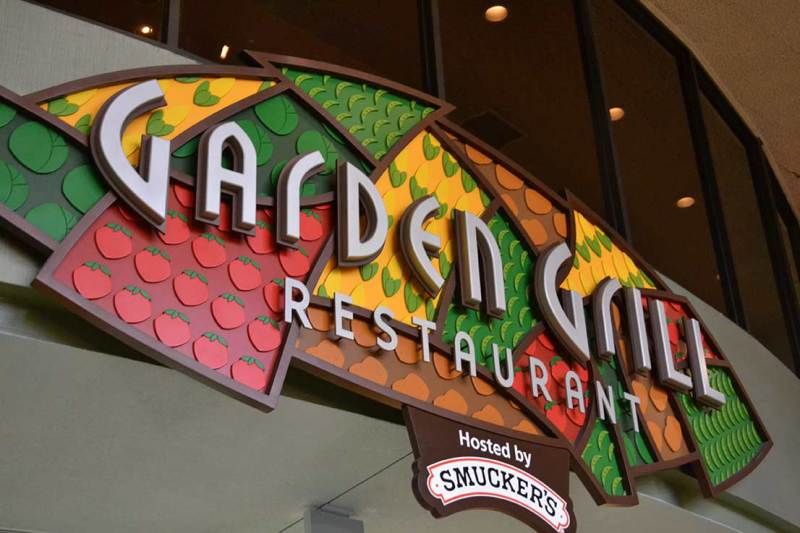
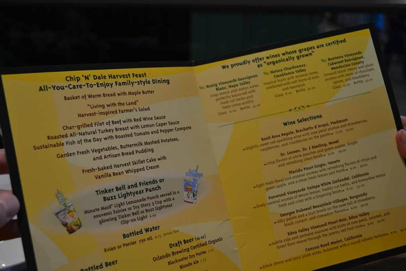
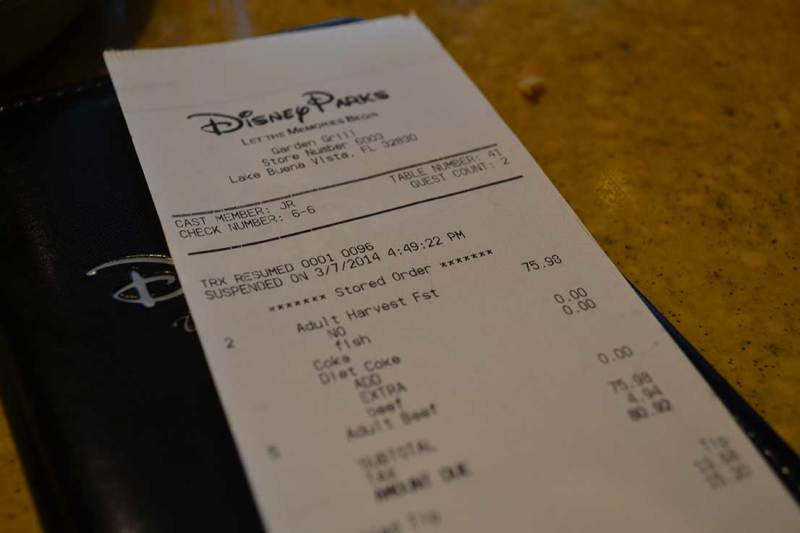

Restaurantes Recomendados

Garden Grill: comida fresquinha com personagens da Disney
Você sabe onde na Disney você pode encontrar o Mickey enquanto come uma comida super fresquinha em um restaurante que gira (devagarzinho, prometo)? É no Garden Grill, restaurante tema do post de hoje.

Faz tempo que eu escuto muita gente falando para eu conhecer o Garden Grill, mas eu nunca dava muita bola. Simplesmente não estava nas minhas prioridades. Sempre havia tantos lugares legais para conhecer que eu deixava o Garden Grill de lado. Bom, depois da minha irmã (do Desfazendo as Malas) e da minha mãe falarem tanto, eu e o Felipe finalmente fomos conferir este restaurante. Como resultado da experiência, eu preciso dar o braço a torcer: eu não devia ter demorado tanto para ir lá. Nós simplesmente ADORAMOS o lugar e esta é uma das dicas que a gente está mais ansioso para dividir com vocês. Finalmente entendi os motivos da fama do Garden Grill e espero que este post te ajude a ser menos mané que eu e conhecer logo o local!
Detalhe fofo: os pratos formando a cabeça do Mickey. :)

O Garden Grill fica no Epcot, no Future World, bem pertinho do popular Soarin’ e do nem tão popular “Living with the Land”, atração que possui grande influencia na cozinha deste restaurante . Para quem não conhece, o Living with the Land basicamente consiste em um passeio que mostra a relação do homem com a terra, cultivo de plantas e tudo o mais. O passeio da atração passa por várias estufas e hortas da Disney e é de lá que sai parte dos ingredientes que vão para a mesa de quem visita o Garden Grill. Mais fresquinho impossível! Boa parte da refeição é definida de acordo com os ingredientes (folhas, frutas, legumes e vegetais) mais frescos nas hortas. Todo esse cuidado faz a maior diferença na sua mesa, pois a qualidade dos alimentos é incrível.
Parte do Living with the Land que fica visível do restaurante,.
Você senta e vê o restaurante girar, mas é bem devagarzinho, tá?
Além disso, lembra que eu comentei que o restaurante gira? Pois é, parte do tempo você vai dar de cara com um pedaço da atração Living with The Land. Se essa história de restaurante que gira não está te parecendo uma boa idéia, não se preocupe. Eu tinha receio de que fosse ficar tonta, mas o local gira SUPER lentamente, você nem nota que tá girando pra te falar a verdade. Bom, chega de blá blá blá, vamos ao que interessa: a comida?Não! Os personagens! 
No Garden Grill você pode tirar sua foto com o Pluto, Tico, Teco e Mickey.
O Garden Grill além de delicioso, é um ótimo local para interação com personagens, todos bem populares: Tico, Teco, Pluto e Mickey. Sim, lá você encontra o Mickey, o que pode significar uma bela economia de tempo para conseguir um autógrafo e uma foto com ele. O Mickey ainda vem super fofo com roupa de fazendeiro. Olha, para os interessados em refeição com personagens eu dou o meu depoimento aqui: eu já fui em quase todos os restaurantes que o Mickey aparece (só falta Tusker House) e até agora o Garden Grill é o meu preferido!
Mickey fazendeiro no Garden Grill, para mim um dos melhores lugares para tirar foto com este personagem.
Bom, mas estamos falando de um restaurante e no fundo a comida é mesmo o que importa, certo? O Garden Grill funciona no estilo “all you can eat”(tudo que você consegue comer), ou seja, você paga um preço fixo e come o quanto quiser. Se você vai com um grupo grande, com várias famílias, restaurantes deste tipo podem ser uma boa alternativa, pois fica bem mais fácil na hora de dividir a conta. O legal aqui é que, diferente da maioria dos restaurantes deste estilo, o Garden Grill não é estilo buffet, em que você tem que se levantar e se servir. Aqui, você fica sentadinho e a comida vem até você em porções de acordo com o tamanho do seu grupo. Você pode pedir novas porções do que quiser quantas vezes quiser: está tudo incluído no preço.
Pão perfeito do Garden Grill, já estou com saudades!
Salada super fresquinha diretamente da horta para a nossa mesa!
A refeição no Garden Grill começa com um pãozinho maravilhoso acompanhado de uma manteiga com maple (para quem não conhece, é tipo um mel só que mais gostoso). Eu não vou ficar me prolongando aqui no meu amor por este pão, mas queria dizer que eu poderia viver dele! Sim, eu estava com fome quando cheguei lá, mas o pão era perfeito. Enquanto você come este pãozinho, o garçom trará uma salada que como eu disse antes, é super fresquinha, feita com as folhas mais bonitas da horta da Disney. Depois disso, ele trará um pratão realmente muito comprido contendo 3 tipos de refeição: uma carne vermelha com um molho de vinho, acompanhada de purê de batatas; um peru com molho de limão e alcaparras, acompanhando de um stuffing, ou seja, o que teoricamente devia ser um recheio de pão com temperos para acompanhar o peru (nem me pergunte, é coisa de americano. Eu achei que tinha gosto de torta de liquidificador) e um peixe do dia com legumes mais frescos disponíveis.
No Garden Grill as comidas vem até sua mesa nessas travessas. Você pode repetir quantas vezes quiser!
Peru com molho de limão e alcaparras com stuffing de pão.
Como eu disse você como o quanto quiser: se acabar, é só pedir que o garçom traz mais. Como o Felipe e eu não gostamos de peixe, já pedimos pro garçom nem trazer. Já a carne vermelha, pedimos para repetir. Ah! E se os seus filhos não gostarem das opções, existe um menu infantil. A gente tentou tirar discretamente uma foto do Mac n Cheese (macarrão com queijo) de uma criança na mesa do lado. A foto não tá perfeita dada a distância, mas dá para ver que é um belo prato também.
Como a gente pediu mais carne e batata, o garçom trouxe uma nova travessa menor só com estes alimentos.
Macarrão com queijo da mesa vizinha: está é uma das alternativas do menu infantil.
Por fim, a sobremesa é um bolinho quente feito com frutas da estação acompanhado de um chantilly de baunilha. Eu sou acostumada a pensar que frustas da estação sempre significam abacaxi, mas não é não. O meu bolinho veio com framboesa e eu acho que quase sempre ele é feito com alguma fruta vermelha, pois todo mundo que eu conheço que foi lá comeu exatamente a mesma sobremesa que eu. Ah! E é claro que entre um pão e outro, entre uma carne ou um peixe do dia, os personagens passam lá para interagir com o seu grupo e tirar fotos.
Berry Cobbler, sobremesa que chega quentinha na mesa com chantilly de baunilha.
Berry Cobbler segundos depois.
Para você que tem preconceito ou já teve experiências não tão legais com restaurantes “all you can eat” fica aqui o meu recado: o Garden Grill pode varrer os seus traumas ou paradigmas. Ele não é barato, mas a qualidade é indiscutível! Eu não sou uma pessoa que gosta de pagar pra comer qualquer coisa e não indicaria um restaurante que não tivesse me servido uma comida que valesse o preço e olha, o Garden Grill valeu demais.

Se você está se perguntando sobre o valor da refeição lá, nós gastamos cerca de 45 dólares por pessoa (incluindo bebida e gorjeta). O valor não é pequeno, mas quando você pensa na quantidade e qualidade de tudo que foi disponibilizado, eu acho honesto. A dica para quem quer ir lá sem pesar tanto no bolso, é fazer uma refeição única, um “almoço/jantar”no restaurante. O Garden Grill só abre para o jantar, mas começa esta refeição às 16h. Se você comer qualquer bobagem na hora do almoço, consegue esperar até às 16he fazer uma única refeição cara no dia. É uma alternativa para quem quer conhecer o local e economizar, mas também para quem não quer exagerar. Uma refeição lá é o suficiente para matar a sua fome para o resto do dia.
Gostou? Então aqui vão algumas informações adicionais para aproveitar o Garden Grill:
- Como todo restaurante com personagens, reservas são altamente recomendáveis. Sem reserva dificilmente você conseguirá uma mesa. Não sabe como fazer a sua reserva? Clique aqui.
- Como eu disse anteriormente, o Garden Grill só serve jantar. O horário para as reservas vai das 16h às 20h.
- Como todo restaurante dentro do Epcot, você precisa de ingresso de admissão no parque para comer no Garden Grill
Pronto! Agora corre lá e faz a sua reserva. Depois conta para a gente o que achou.
Nome: The Garden Grill (jantar)
Endereço: 1510 North Cove Road, Lake Buena Vista, FL 32830 (Veja no Google Maps)
Telefone: +1 407-560-6071
Referência: Dentro do parque Epcot, no pavilhão The Land
Preço: US$30-50 por pessoa (março/2014)
Horário de Funcionamento: depende do horário de funcionamento do Epcot
Cardápio: clique aqui para visualizar o cardápio (em inglês)
Disney Dining Plan: Sim
Avaliação do VPD: